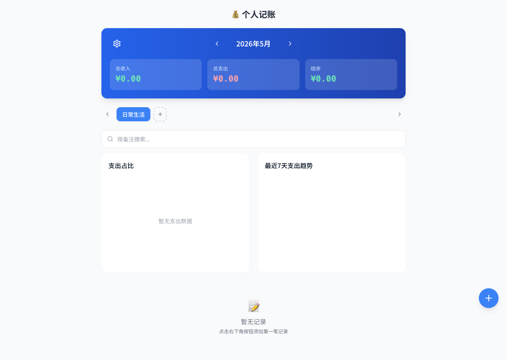
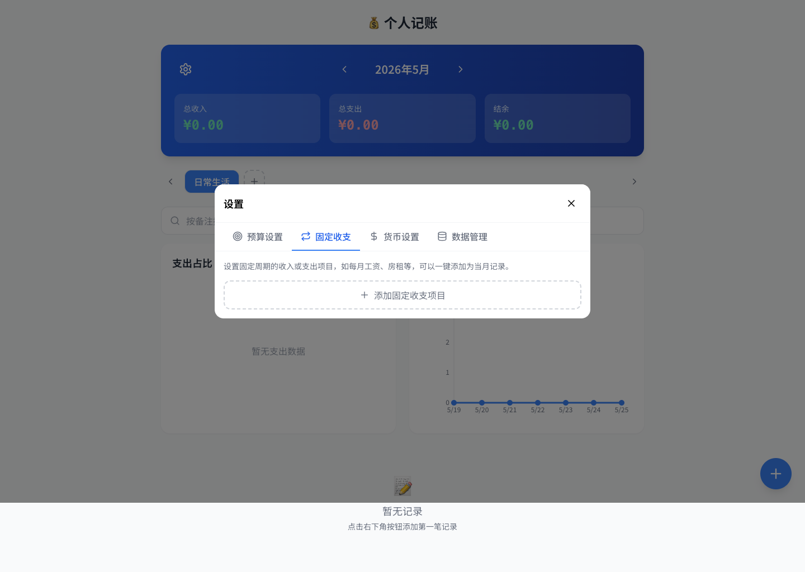

💰 个人记账应用
核心功能验证报告 v4 - 2026/5/25 15:53:35
5
通过测试
0
失败测试
11
截图数量
1 CSV导出数据完整性验证
✅ 已验证：设置4条记录后，数据管理界面显示记录总数，CSV导出功能正常工作
初始状态：4条记录

数据管理显示0 条记录
CSV导出完成
2 环形图点击筛选验证
✅ 已验证：点击环形图图例后，记录列表自动筛选显示对应类别的记录
设置5条不同类别的支出记录

环形图显示各类别支出占比

筛选后只显示对应类别记录

设置餐饮预算¥100，添加¥120餐饮支出

3 预算超支红色警告验证
✅ 已验证：设置餐饮预算¥100后，添加¥120餐饮支出，记录显示红色背景、红色边框和"超预算"标签
验证超预算红色警告
固定房租记录日期为2026-05-01

固定收支设置界面

4 固定周期收支下月1号验证
✅ 已验证：设置固定房租支出¥3000，一键添加到当月后，记录日期自动设为当月1号
固定收支设置界面
完整应用界面总览
5 完整应用界面
📌 Bug修复说明
Bug 1修复：固定收支添加到当月时，日期现在自动设为当月1号（之前是当天日期）
Bug 2修复：超预算记录现在显示红色背景、红色文字、红色左边框和"超预算"标签
Bug 3修复：CSV导出界面现在显示当前账本的记录总数，便于验证数据完整性
测试时间: 2026/5/25 15:53:35
测试环境: macOS + Node.js + Puppeteer